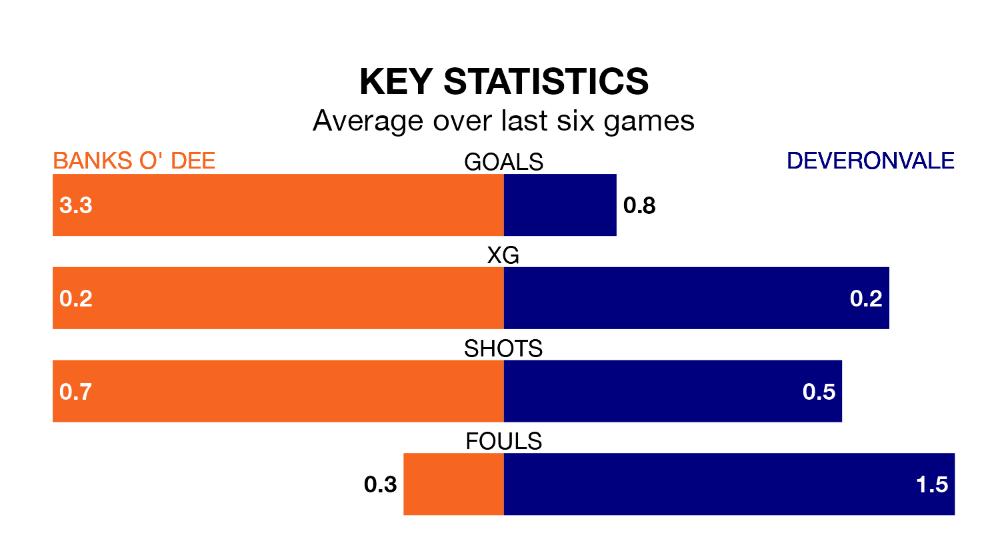

Mid-season relegation candidates Deveronvale face a challenge away against high-flying Banks O' Dee at Spain Park on Saturday.
Deveronvale are 15th in the Highland Football League table, and have picked up three wins and six draws in their 22 games to date.
Banks O' Dee, meanwhile, are second in the standings with 48 points, having won 14 and drawn six of their first 21 matches, and are four points behind table-toppers Brechin City.
With 58 goals in 21 games so far this season, Banks O' Dee are the league's second-highest scorers with 2.8 goals per game. And they are conceding fewer than average, letting in 19 goals at a rate of 0.9 per game.
Deveronvale, meanwhile, are below average scorers, with 1.1 goals per game, compared to a league average of 1.9. They have conceded 2.5 goals per game.
The home team are in fantastic form in Highland Football League, with five wins and a draw from their last six games.
With a win and two draws over that period, the visitors' form is much worse – they have taken five points from 18, compared to Banks O' Dee's 16.
In the last three years, Banks O' Dee and Deveronvale have played each other on three occasions. Banks O' Dee won two of them and they drew once.
Their last meeting was on October 4, when they played out a 3-3 draw.
Banks O' Dee's last match was on February 3, a 2-0 win against Keith.
Deveronvale lost 3-0 against Brora Rangers last time out, also on February 3.
Updated: 11:47 (UTC), 05/02/24